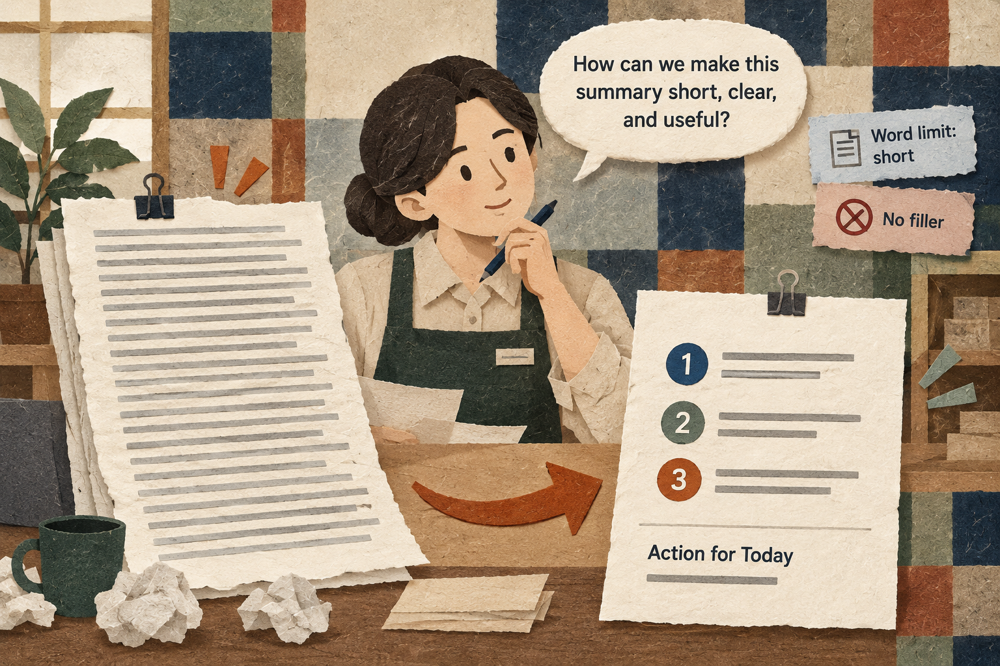

Situation
The problem
An unconstrained AI summary can be too long, vague, and hard to use. A manager needs a way to specify required content, forbidden filler, audience, tone, and length.

3 Hours (180 minutes) - Hour 1 (50 min): Comprehensive Concept Lecture & Live Demonstration - Hour 2 (50 min): Guided Hands-On Lab (Basic Exercise: 5-Constraint Summary Audit) - Hour 3 (50 min): Applied Business Challenge & Peer Debrief (Advanced Exercise: Bimodal Stakeholder Tone Calibration)
An unconstrained AI summary can be too long, vague, and hard to use. A manager needs a way to specify required content, forbidden filler, audience, tone, and length.
Eliminate ambiguous phrasing and enforce strict negative and positive constraints on AI outputs.
Practice material: Use the practice material supplied in the session Markdown.
Do not replace missing information with guesses.
An unconstrained AI summary can be too long, vague, and hard to use. A manager needs a way to specify required content, forbidden filler, audience, tone, and length.
Key explanations taken from the active session lesson.
Key explanations taken from the active session lesson.
These examples come from the current session scenario.
Give me some tips on how to manage retail store employees effectively.
Keep the source, task, constraints, and output check visible.
You are a Retail Operations Consultant. Summarize the employee management guidelines below for a first-time store manager.
Follow these 5 strict constraints:
1. Maximum length: Exactly under 120 words total.
2. Format: Exactly 3 numbered bullet points, followed by one single "Action for Today".
3. Tone: Direct, operational, and practical (no academic jargon).
4. Negative Constraint: Do NOT use corporate buzzwords such as "synergy", "paradigm shift", "game-changer", "delve", or "testament".
5. Required Content: Every bullet must include a specific operational behavior (e.g., morning shift huddles, checklist sign-offs).
Source Guidelines:
"""
[Paste SBA guide excerpt here]
"""Use the complete case and instructions from the session Markdown.
Use the complete case and instructions from the session Markdown.
Check the output before sharing or acting on it.